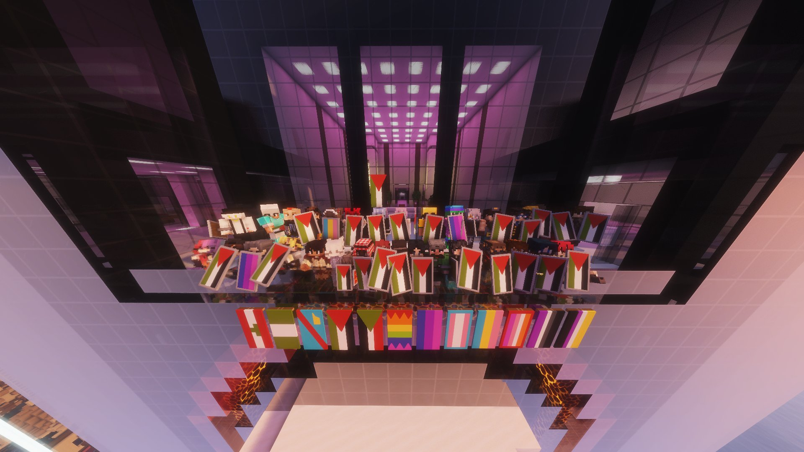
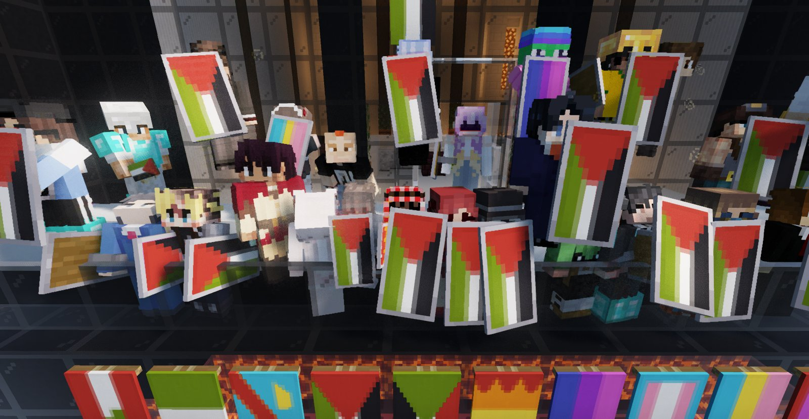
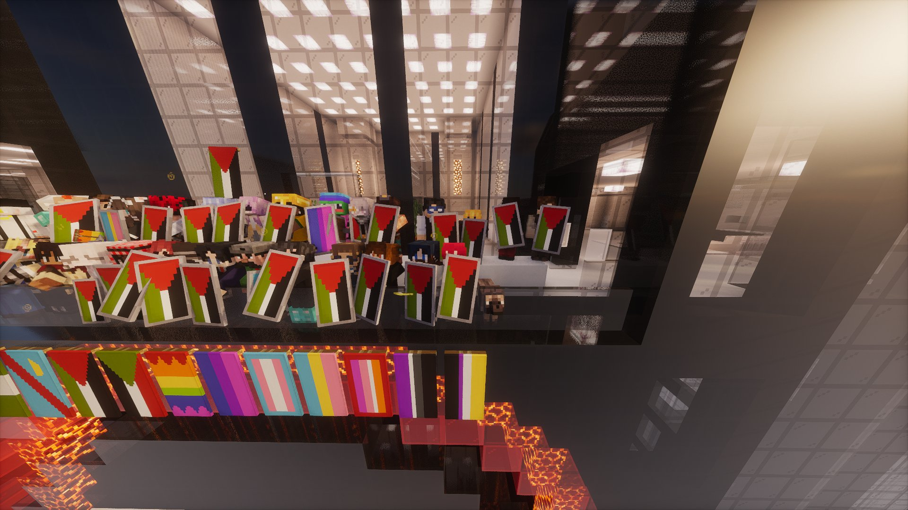

Rassemblement solidaire : l'île se pare de couleurs et affiche son unité
Depuis le balcon au sommet de la tour du fisc, des citoyens venus de tous horizons ont brandi leurs drapeaux face au ciel — un acte de résistance douce et déterminée dans un contexte particulièrement tendu.

Notre territoire a vibré au rythme d'un moment fort et émouvant : un rassemblement solidaire réunissant des citoyens venus de tous horizons, en soutien à l'ensemble des communautés représentées par les nombreux drapeaux brandis fièrement lors de l'événement. C'est depuis le balcon au sommet de la tour du fisc, point culminant et symbole de notre territoire, que cette photo historique a été prise — un cadre hautement symbolique pour un message qui se voulait visible par tous.
Un arc-en-ciel de drapeaux, une seule voix
Les drapeaux étaient nombreux, variés, et chacun portait en lui une histoire, une identité, une fierté. Chaque étendard représentait une communauté, et ensemble ils formaient un message uni et indivisible : ici, sur notre territoire, chacun a sa place, quelle que soit son identité. Perchés sur le balcon de la tour du fisc, ces couleurs étaient visibles de toute l'île — un choix fort, assumé et magnifique.

Un message fort dans un contexte tendu
Dans une période où notre île a été éprouvée par la violence, les menaces et l'instabilité, ce rassemblement prend une résonance particulière. Choisir de se réunir au sommet de la tour du fisc, lieu névralgique de notre territoire, de s'afficher et de célébrer la diversité malgré le contexte, c'est un acte de résistance douce et déterminée. Les participants ont démontré que la solidarité et l'amour ne se laissent pas intimider par les événements tragiques qui ont secoué notre communauté ces derniers jours.
L'île envoie un signal clair
Le Karmine Déchaîné salue chaleureusement tous ceux qui ont participé à ce rassemblement et rappelle que la force de notre territoire réside dans sa diversité. Qu'on soit noble, marchand, citoyen lambda ou membre d'une guilde — nos différences sont notre richesse, et notre unité est notre armure.
"Ils sont montés au sommet de la tour du fisc, ils ont déployé leurs couleurs face au ciel, et ils ont rappelé à tous que l'amour et la solidarité sont plus forts que la haine. Le Karmine Déchaîné était là, et il n'oubliera pas."
— La Rédaction
